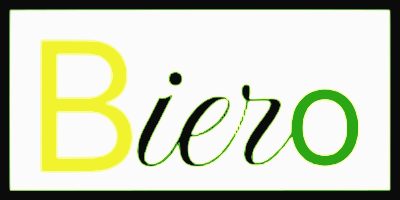

<mat-toolbar>
    <mat-toolbar-row>
            <a routerLinkActive="actif" [routerLinkActiveOptions]="{exact: true}">
              <span routerLink="/">
                
              </span>
            </a>
        <span>{{titre}}</span>
        <span class="filler"></span>
        <aside>
            <p>Connecté : <mat-checkbox (change)="seConnecter()" [(ngModel)]="estConnecte"></mat-checkbox></p>
        </aside>
    </mat-toolbar-row>
    <mat-toolbar-row>
        <span class="filler"></span>
        <nav>
            <button mat-raised-button routerLink="/bieres" routerLinkActive="actif">Bières</button>
            <button mat-raised-button routerLink="/new-biere" routerLinkActive="actif">Nouvelle Bière</button>
        </nav>
    </mat-toolbar-row>
</mat-toolbar>